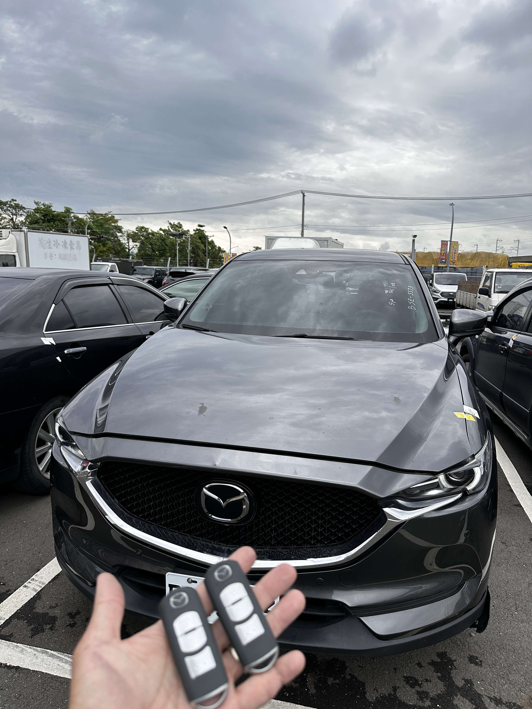

現場實拍：台中清水 Mazda CX-5 智慧感應鑰匙全丟現場匹配
清水區 Mazda 緊急救援：魂動美學現場快速復原
近日接獲台中清水車主求助，其 Mazda CX-5 的智慧感應鑰匙不慎全數遺失。車輛鎖死在路邊停車位，原廠表示需拖回維修廠並等待數日訂貨。極致核心接獲通報後，立即派遣專業行動工作站抵達清水現場，為車主爭取最快恢復啟動的時間。
技術核心：OBD 數據重構與 ID 註銷
針對 Mazda 的高度安全防盜架構，技師現場執行精密解碼程序：
- • 無損開鎖： 採用專用工具無損開啟車門，保護原車烤漆與鎖具。
- • OBD 匹配： 連結車輛診斷介面，直接進行防盜數據讀取與新鑰匙寫入。
- • 安全保障： 同步註銷已遺失的舊鑰匙 ID，防止遺失鑰匙遭他人冒用。
僅歷時約 50 分鐘，兩把全新的 Mazda 原廠等級智慧鑰匙便配製完成。不論是 Keyless 門把感應、按鈕啟動，功能完全與原廠一致，讓車主免於拖吊困擾，當場恢復用車。